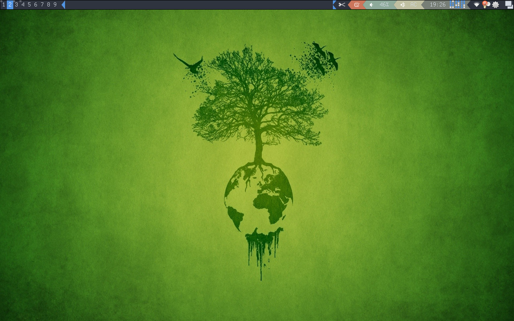
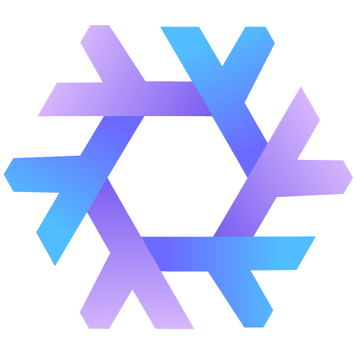

Nix-Config
Table of Contents
Configuration for NixOS and user home (dot files). It is provided via Nix flakes and includes the following components:

Introduction
This is my personal configuration for GNU/Linux systems. It enables a consistent experience and computing environment across all of my machines. This project is written with GNU/Emacs, leveraging its capabilities for Literate Programming, a technique where programs are written in a natural language, such as English, interspersed with snippets of code to describe a software project.
Getting Started
- Download the latest version of NixOS
- Partition your drives and mount the file system
- Clone the project
git clone git@github.com:Actoriu/nix-config /mnt/etc/nix-config - Load the default shell
nix-shell /mnt/etc/nix-config - Install the system
sudo nixos-install --impure --flake /mnt/etc/nix-config#hostname - Reboot, login and start a graphical system
startx
Making Changes
The nixos-rebuild command updates the system so that it corresponds to the configuration specified in the module. It builds the new system in /nix/store/, runs the activation scripts, and restarts and system services (if needed). The command has one required argument, which specifies the desired operation:
| Command | Description |
|---|---|
| boot | Build the new configuration and make it the boot default, without activation |
| test | Build and activate the new configuration, without adding it to the boot menu |
| switch | Build and activate the new configuration, making it the new boot default |
| build | Build the new configuration, without activation, nor adding it to the boot menu |
| build-vm | Build a script that starts a virtual machine with the desired configuration |
After making changes to the configuration the switch command will build and activate a new configuration.
# Build and activate a new configuration. sudo nixos-rebuild switch --flake $FLAKE#$HOSTNAME
Instead of building a new configuration, it's possible to rollback to a previous generation using the nixos-rebuild command, by supplying the --rollback argument.
# Rollback to the previous generation. sudo nixos-rebuild switch --rollback
NixOS module
sudo nixos-rebuild switch --flake '$@' $@ => "flake file directory#hostname"
- Nix-Darwin module
Install Nix-Darwin and apply the configuration by
nix-shell -p nix --command "nix build --experimental-features 'nix-command flakes' '$@'" ./result/sw/bin/darwin-rebuild switch --flake '$@' $@ => "flake file directory#darwinConfigurations.hostname.system"
Since the release 22.05, building a flake-based configuration is as simple as
darwin-rebuild switch --flake '$@' $@ => "flake file directory#hostname"
- Non-Nixos
Install Home Manager and apply the configuration by
nix-shell -p nix --command "nix build --no-link --experimental-features 'nix-command flakes' '$@'" ./result/activate $@ => "flake file directory#homeConfigurations.username.activationPackage"
Since the release 22.05, building a flake-based configuration is as simple as
home-manager switch --flake '$@' $@ => "flake file directory#username"
Nix-on-droid
nix-on-droid switch --flake '$@' $@ => "flake file directory#devicename"
Operating System

NixOS is a purely functional Linux distribution built on top of the Nix Package Manager. It uses a declarative configuration language to define entire computer systems, and allows reliable system upgrades and rollbacks. NixOS also has tool dedicated to DevOps and deployment tasks, and makes it trivial to share development environments.
# { description = ""; inputs = { }; outputs = inputs @ { self, nixpkgs, nixpkgs-unstable, ... }: { } // }
Nixpkgs
Nixpkgs is a collection of over 80,000 software packages that can be installed with the Nix Package Manager. Two main branches are offered:
- The Unstable branch following the latest development
nixpkgs.url = "github:nixpkgs/nixos-unstable";
Flake Utils
Flake Utils is a collection of pure Nix functions that don't depend on Nixpkgs, and that are useful in the context of writing other Nix Flakes.
flake-utils.url = "github:numtide/flake-utils";
Home Manager
Home Manager provides a basic system for managing user environments using the Nix Package Manager together with the Nix libraries found in Nixpkgs. It allows declarative configuration of user specific (non-global) packages and files.
home-manager.url = "github:nix-community/home-manager"; home-manager.inputs.nixpkgs.follows = "nixpkgs";
Development Shells
The command nix develop will run a bash shell that provides the build environment of a derivation. It's an experimental replacement for the nix-shell command that is compliant with Nix Flakes. It provides an interactive build environment nearly identical to what Nix would use to build installable. Inside this shell, environment variables and shell functions are set up so that you can interactively and incrementally build your package(s).
inputs.flake-utils.lib.eachDefaultSystem (system:
let
pkgs = inputs.nixpkgs.legacyPackages.${system};
in
rec {
devShells = {
default = import ./shell.nix { inherit pkgs; };
cc = import ./shells/cc.nix { inherit pkgs; };
go = import ./shells/go.nix { inherit pkgs; };
grpc = import ./shells/grpc.nix { inherit pkgs; };
java = import ./shells/java.nix { inherit pkgs; };
node = import ./shells/node.nix { inherit pkgs; };
python = import ./shells/python.nix { inherit pkgs; };
rust = import ./shells/rust.nix { inherit pkgs; };
};
}
);
Nix

This shell adds a version of the nix command that is pre-configured to support Flakes. Flakes are the unit for packaging Nix code in a reproducible and discoverable way. They can have dependencies on other flakes, making it possible to have multi-repository Nix projects. A flake is a filesystem tree that contains a file named flake.nix. It specifies some metadata about the flake such as dependencies (inputs), as well as the values such as packages or modules (outputs).
Import this shell with nix develop $DOTFILES
# { pkgs ? import <nixpkgs> { } }: with pkgs; let myNix = writeShellScriptBin "nix" '' exec ${nixFlakes}/bin/nix --option experimental-features "nix-command flakes" "$@" ''; in mkShell { buildInputs = [ git myNix ]; shellHook = '' export DOTFILES="$(pwd)" ''; }
Relevant projects
- nix-config (pulled by
nix-config)